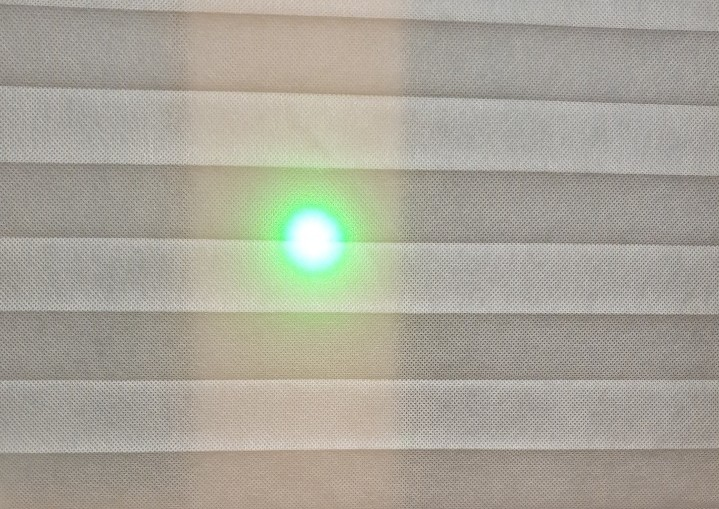

기획서에 적었던 제품은 제품선택 칸에서 갑자기 +12,000원이 돼버리는 바람에 서둘러 다른 제품을 찾게 되었다.
이번에 찾은 이 제품은 가격은 7,900원으로 배터리는 따로 구매해야하지만 이 사이트에서 한꺼번에 선택해서 구매할 수 있다. (+800원) 한 손에 잡으면 딱 들어오는 사이즈라 안정감이 있다.
빛의 세기는 실내에서 촬영했을때는 이정도 퍼진다.
불빛이 큰 레이저건뿐만 아니라 작은 레이저포인터의 불빛으로도 까마귀등의 조류를 퇴치할 수 있다는 것을 볼 수 있다. 게다가 관련글을 읽으면 알 수 있듯이 육식동물 눈빛으로 인식해서 조류들이 위협을 느껴 도망간다는 것을 알 수 있다. 과연 실제로는 얼마나 효과가 있을까?
가장 먼저 찾을 수 있었던 참새떼에 실험을 해봤다. 아주 성공적이었다.
참새를 찾은 뒤, 다른 커다란 새를 찾기 위해 학교 주변을 끊임없이 돌아다녔다. 그렇게 전봇줄 위에서 찾게된 까치. 역시 실험은 성공적이었다.
그 다음 대망의 비둘기! 처음에는 반응을 보이는 듯하였으나, 점점 반응이 없어졌다. 역시...사람에게 너무 길들여진 것일까?
이 다음에 다시 실험을 하게 되었을 땐, 시간이 오래걸리기는 했지만 날려보낼 수 있었다.
결론적으로 비둘기는, 인내심을 가져야만 하는 것 같다.
(그런데 이상하게 일요일에 천안에서 길거리 비둘기에게 사용했을 때는 바로 반응이 왔다.)